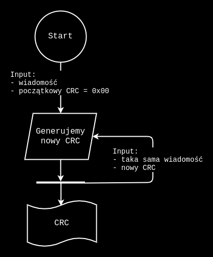
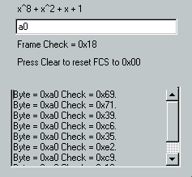
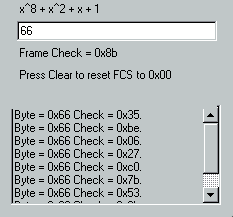

Systemy wbudowane, Laboratorium
Na tych laboratoriach pojawi się nowy element języka VHDL: funkcja. Będzie też pamięć (ROM) oraz generator sumy kontrolnej (CRC-8) a także problem synchronizacji dwóch komponentów.
Funkcja w języku VHDL jest podprogramem posiadającym jako wejście sygnały oraz zwracającym wyłącznie jedną wartość określonego typu. Jest traktowana jako wyrażenie i jako takie może być stosowana wyłącznie w ramach procesu.
W VHDL istnieje też pojęcie procedury — może ona mieć wiele wejść i wyjść i jest instrukcją — tak jak np. przypisanie (
<=) i jest wykonywana równolegle bądź sekwencyjnie, w zależności od miejsca jej wywołania. Podprogram (a więc funkcja) może korzystać wyłącznie z instrukcji sekwencyjnych. Nie może definiować sygnałów wewnętrznych — może używać jedynie zmiennych. I w odróżnieniu od zmiennych w procesie — te w funkcji nie zachowują wartości pomiędzy kolejnymi wywołaniami! Czyli taka normalna funkcja.Przykład funkcji, która oblicza XOR ze wszystkich bitów w danym wektorze:
function mxor (signal A : std_logic_vector) return std_logic is variable tmp : std_logic; begin p := ’0’; for i in A’range loop p := p xor A(i); end loop; p := p xor ’0’; return p; end mxor;Instrukcja
waitw VHDL służy do kontrolowania działania kodu w czasie i umożliwia określenie operacji „czekaj [dopóki|na zdarzenie|przez]”. Wielokrotnie używaliśmy jużwait for {czas}. Warto zaznajomić się z pozostałymi możliwościami:wait on {sygnał}orazwait until {warunek}. Instrukcjiwaitnie można używać w procesach posiadających listę czułości oraz w procedurach wywoływanych w takich procesach, oraz w funkcjach. Wykonywaniewaitwewnątrz procedury, która jest czuła na jakiś sygnał, mogłoby prowadzić do tego, że procedura czeka, a jednocześnie jest uruchamiana od nowa. A ponieważ VHDL opisuje sprzęt — to układ jednocześnie czekający i wykonujący obliczenia — nie jest możliwy. Dodatkowo kod posiadający poleceniawaitnie jest syntetyzowalny, tj. nie można z niego wygenerować „wsadu” do prawdziwego procesora FPGA.
Przeanalizuj kod dla
rom.vhd,pack.vhd,crc8.vhd. Odpowiedz na pytania:
- Jak wygląda schemat blokowy generatora CRC-8? (narysuj!)
- Jak jest realizowana tutaj pamięć ROM?
- Co jest przechowywane w tej pamięci?
Ad:
Schemat blokowy:

Pamięć ROM to po prostu pewne entity, które przyjmuje na wejście adres, z którego chcemy pobrać informację, a następnie wydaje na wyjście wartość w podanym adresie.
W pamięci ROM (rom.vhd) przechowywane są kolejne CRC dla stałych wartości 0×A0 oraz 0×66 (ulokowane w osobnych architecture-ach).
Przeanalizuj
crc8_tb.vhd. Odpowiedz na pytania:
- Co realizują linie 68-72?
- Co jest przyczyną generowanych przez testbench ostrzeżeń? Usuń przyczynę.
Ad:
Linie opóźniają wystartowanie procesu, który „napędza” testowany entity crc8.
Przyczyną jest deklaracja sygnału address, bez podania początkowej jej wartości.
non logical value detected, returning 0Program ostrzega nas przed tym zajściem, a następnie ustawia address na wartość domyślną, czyli zero.
W celu naprawienia programu należy zmienić linijkę deklaracji sygnału address na:
signal address : std_logic_vector(2 downto 0) := (others => '0');Zbuduj test poprawności działania modułu CRC-8. Pomocne może być narzędzie online: http://smbus.org/faq/crc8Applet.htm, a do testów modułu CRC-8 z pliku
crc8.vhdnapisz kompletny, automatyczny test korzystający z danych zapisanych w pamięci ROM.
Kod programu testującego znajduje się w pliku crc8_tb.vhd.
Żeby wykonać testy, należy skompilować program
make builda następnie go uruchomić poleceniem
make r=crc8_tbWynik testów wskazuje na to, że program działa poprawnie — wynik jest taki sam jak wartości w pliku rom.vhd.
Takie same wartości daje polecone narzędzie online:

